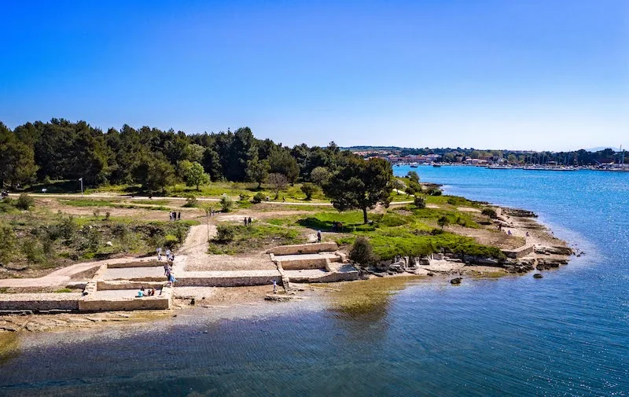
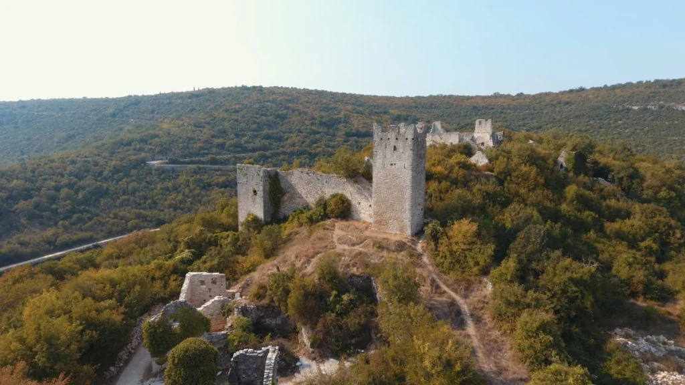

Forum
A square in the old town of Pula, next to the Temple of Augustus and the Town Hall.
View on map
A Roman amphitheatre built in the 1st century AD. It hosts the Pula Film Festival and concerts.
Pula city centre · ~20 min by car
View on map
A square in the old town of Pula, next to the Temple of Augustus and the Town Hall.
View on map
A remarkably intact Roman temple from the 1st century BC dedicated to the goddess Roma and Emperor Augustus. Located on the Forum.
View on map
The Arch of the Sergii ("Golden Gate"), a triumphal arch from 29-27 BC at the entrance to the old town. One of the oldest and best preserved Roman arches in the world.
View on mapHercules' Gate, the oldest Roman monument in Pula, dating from the 1st century BC. A single-arched gate with a carved head of Hercules above the arch.
View on mapThe Venetian Fortress built in the 17th century on the site of the original Roman Capitol, offering panoramic views over Pula and the harbour. Houses the Historical Museum of Istria.
View on mapBaptistery of the Holy Trinity, an early Christian rotunda from the 6th century, one of the finest examples of early Byzantine architecture in Istria.
View on mapThe Roman and medieval city walls and gates of Pula, encircling the old town. Several towers and gate passages survive and can be walked along.
View on map
The Brijuni Islands National Park, an archipelago of 14 islands with Roman ruins, a safari park with exotic animals, pristine beaches, and Tito's famous summer residence. Reached by ferry from Fažana.
View on map
A scenic peninsula near Medulin with an archaeological park revealing remains of a Roman villa rustica and early Christian basilica, surrounded by walking paths and sea views.
View on map
Golden Cape Forest Park in Rovinj, a beloved coastal forest park with walking and cycling paths through pine and cypress trees, ending at beautiful rocky coves on the Adriatic.
View on mapPalud is an ornithological reserve near Rovinj with wetland habitats and birdwatching opportunities.
View on mapThe Two Sisters islands, a pair of small uninhabited islands off the coast near Premantura. A popular destination for boat trips, snorkelling, and peaceful swimming in clear waters.
View on map
Fantazija Quarry is a geological site near Rovinj with visible limestone layers.
View on map
A remarkably preserved medieval ghost town in central Istria, abandoned in the 17th century. Its towers, walls, and church ruins rise from the forest, one of the most atmospheric sites in Istria.
View on mapThe Pula Film Festival takes place in the Pula Arena.
View venue on mapPula Night, a popular summer evening event when the old town streets fill with music, performers, food stalls, and culture. A vibrant celebration of the city's heritage.
View area on mapMarkets and restaurant events featuring Istrian food, wine and olive oil.
View area on mapA fair featuring local jewellery, ceramics, textiles, food and crafts.
View area on map